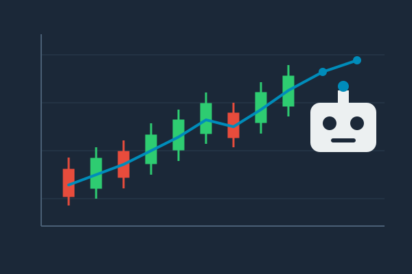
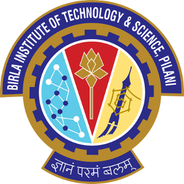

LSE Sector Scout

I'm an AI Engineer at Cognizant in London. I build agentic and retrieval-augmented systems for enterprise customers, and I spend most of my time embedded with the people who will actually use them: scoping the ambiguous first version of the problem, building it, and getting it into production.
My last project there was in the UK public sector, where I was the sole AI Engineer on an agentic data discovery tool that lets analysts query 200+ enterprise datasets in plain English, turning something that used to take days of back and forth into a question answered in minutes. Before Cognizant I spent two years at ZS Associates productionising LLM pipelines over healthcare and insurance data, and I hold an MSc in Computer Science with Speech and Language Processing from the University of Sheffield.
I'm currently looking for full-time Forward Deployed Engineer and Applied AI roles, where the work sits close to the customer and ends in something shipped. If that sounds like your team, I'd love to hear from you.
Outside of work I listen to a lot of music, play video games, read about mythology and go on hikes.
Cognizant, London
AI Engineer - - Present
Sole AI Engineer on an agentic data-discovery tool on Azure for a UK public sector client, letting analysts self-serve queries across 200+ enterprise datasets in plain English.
ZS Associates, Bangalore
Advanced Data Science Associate - -
Built and productionised LLM systems over unstructured healthcare and insurance data.
Microsoft IDC, Hyderabad
Software Engineer Intern - -
Part of the Microsoft Search, Assistance and Intelligence team.
LLM & GenAI
Languages & Tools
Cloud & Deployment
The University of Sheffield
MSc Computer Science with Speech and Language Processing, Distinction - -
Dissertation: Hallucination Span Detection in Large Language Models
Read the dissertation
BITS Pilani, Goa Campus
B.E. Electronics and Instrumentation - -
Undergraduate research: Transformer-based Models for Supervised Monocular Depth Estimation, published at ICICCSP 2022
Read the paperDepartment of Computer Science, University of Sheffield
MSc Dissertation - 2025
Hallucination Span Detection in Large Language Models
Centre for Language Evolution, University of Edinburgh
Visiting Student Researcher - -
Formal v/s Contextual Cues for Grammatical Gender Prediction
Cognitive Neuroscience Lab, BITS Pilani Goa Campus
Student Researcher - -
Diachronic Distributed Word Representations as Models of Mental Lexicon
I'm looking for full-time Forward Deployed Engineer and Applied AI roles, and I'm always happy to talk about agents, retrieval and what it takes to get LLM systems into production.